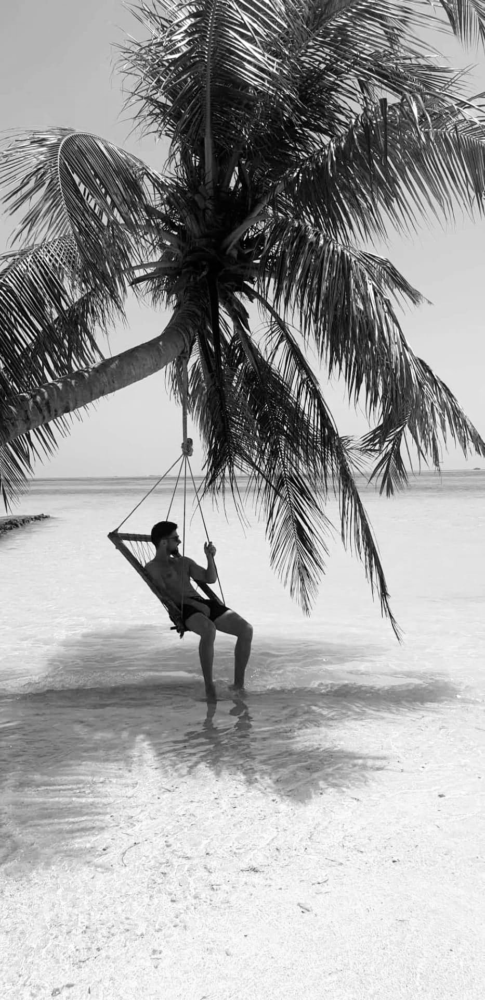

Ik geniet van het luisteren naar podcasts zoals:
Sporten is een geweldige manier om je gezondheid en welzijn te verbeteren. Elke sport heeft zijn eigen voordelen, afhankelijk van de intensiteit, duur en frequentie van de training.
Volgens Andrew Huberman, een neurowetenschapper en hoogleraar aan de Stanford University, zijn dit enkele van de voordelen van de volgende sporten:
Krachttraining heeft veel voordelen voor je lichaam en je brein. Het stimuleert de aanmaak van nieuwe hersencellen, verhoogt de productie van neurotrofines, verlaagt het stressniveau, verbetert de slaapkwaliteit, verhoogt de stofwisseling, verbetert de hormoonbalans en versterkt de botten, pezen en gewrichten.
Joggen is een matige vorm van lichaamsbeweging die je hartgezondheid, botgezondheid, hersengezondheid, immuunsysteem, insulineresistentie, levensduur, psychische gezondheid en slaap verbetert. Joggen kan ook stress verminderen, angst en depressies te lijf gaan en je wervelkolom flexibel houden tijdens de veroudering.
Hiken is een vorm van wandelen in de natuur die je cardiovasculaire conditie, spierkracht, balans, coördinatie en flexibiliteit verbetert. Hiken kan ook je creativiteit, geheugen, aandacht en probleemoplossend vermogen stimuleren door je blootstelling aan natuurlijke stimuli. Bovendien kan hiken je humeur verbeteren, stress verminderen en je zelfvertrouwen vergroten door je gevoel van verbondenheid met de natuur.
HIT staat voor high-intensity interval training, een vorm van training waarbij je afwisselend korte periodes van intense inspanning en herstel doet. HIT heeft veel voordelen voor je cardiovasculaire gezondheid, spiermassa, vetverbranding, insulinegevoeligheid en groeihormoonproductie. Volgens Andrew Huberman kan HIT ook je neuroplasticiteit verhogen, wat betekent dat je hersenen beter kunnen leren en zich aanpassen aan nieuwe situaties. HIT kan ook je stemming verbeteren door het vrijkomen van endorfines en dopamine.
Ik ben altijd op zoek naar nieuwe boeken om te lezen. Hier zijn enkele van mijn aanbevelingen:
Een fascinerend boek dat de chemie achter verlangen en motivatie verkent. Een absolute aanrader voor wie geïnteresseerd is in psychologie.
Dit boek duikt diep in de wetenschap en praktische tips voor een lang en gezond leven. Ik vind het erg inspirerend.
Een boek over onderhandelingstechnieken door voormalig FBI-onderhandelaar Chris Voss. Ik kijk ernaar uit om dit te lezen.
Reizen is een passie van me. Hier zijn enkele van mijn recente reiservaringen:
Cuba is een land vol geschiedenis, cultuur en prachtige landschappen. De levendige steden en prachtige stranden maakten mijn recente reis echt speciaal.
Als je graag op een prachtig eilandje zit met weinig mensen en honderden soorten vissen en koralen om je heen, dan zijn de Maldiven echt een aanrader.
